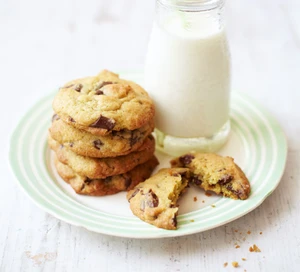

Vintage chocolate chip cookie recipe

Description
An easy chocolate chip cookie recipe for soft biscuits with a squidgy middle that will impress family and friends. Make plenty as they're sure to be a hit
Ingredients
- 150g salted butter, softened
- 100g light brown muscovado sugar
- 60g granulated sugar
- 2 tsp vanilla extract
- 1 large egg
- 225g plain flour
- ½ tsp bicarbonate of soda
- ¼ tsp salt
- 200g plain chocolate chips or chunks
Steps
Step 1
- Heat the oven to 190C/fan170C/gas 5 and line two baking sheets with non-stick baking paper.
Step 2
- Put 150g softened salted butter, 80g light brown muscovado sugar and 80g granulated sugar into a bowl and beat until creamy.
Step 3
- Beat in 2 tsp vanilla extract and 1 large egg.
Step 4
- Sift 225g plain flour, ½ tsp bicarbonate of soda and ¼ tsp salt into the bowl and mix it in with a wooden spoon.
Step 5
- Add 200g plain chocolate chips or chunks and stir well.
Step 6
- Use a teaspoon to make small scoops of the mixture, spacing them well apart on the baking trays. This mixture should make about 30 cookies.
Step 7
- Bake for 8–10 mins until they are light brown on the edges and still slightly soft in the centre if you press them.
Step 8
- Leave on the tray for a couple of mins to set and then lift onto a cooling rack.